Estimated trips starting in the 18:00 hour across 2023, the busiest hour of the day.
Weekend pickups at midnight compared with weekdays. Weekends run late.
Average speed at 05:00 against 17:00. Congestion more than halves speed.
Pickups per dropoff at JFK Airport. Many taxis must arrive there empty.
Fare per mile at 05:00 against the afternoon, because the meter also charges for slow traffic.
Tip rate on trips under 2 miles, against 20.0% on trips over 5 miles.
01The data
The Taxi and Limousine Commission publishes every yellow taxi trip. Each record has times, pickup and dropoff zones, distance, passengers, payment and nine charge fields.
- Sampling by date and hour keeps busy days, quiet days and holidays. Each month's share of the sample matches its share of all trips to within 0.01 percentage points.
- Counts from the sample are divided by 0.0075 to estimate full-year totals.
Cleaning
| Issue | Share of sample | Treatment |
|---|---|---|
| Negative charges, all from one vendor | 1.0% | Removed. 87% match a positive trip with the same time, zones and amount, so they are reversals. |
| Missing passengers, rate code and fees, with payment type 0 | 3.4% | Imputed. Congestion and airport fees were inferred from each trip's fare breakdown. |
| Zero passengers | 1.5% | Set to one, because a paid trip carries at least one passenger. |
| Impossible durations, distances and speeds | 0.2% | Removed. Examples include trips over 250 miles, over five hours or faster than 80 mph. |
- The longest trip fell from 44,410 miles to 96 miles, and the longest duration from about 24 hours to 5 hours.
02When people ride
Demand follows the working day on weekdays and the night on weekends.
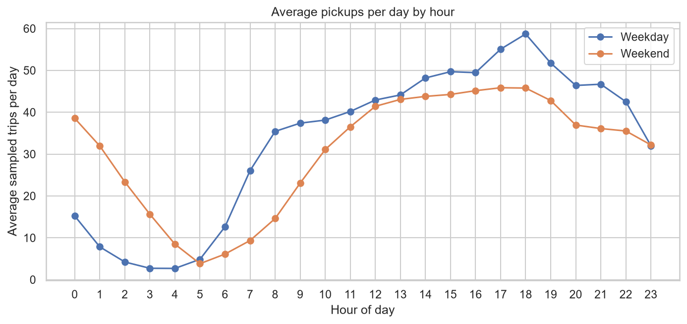
- Weekdays peak at 18:00, after a steep rise from 06:00 to 08:00.
- Weekend pickups at midnight are 2.5 times the weekday level.
- Weekend mornings start about two hours later than weekday mornings.
- Demand is lowest at 04:00, at under a tenth of the peak.
By month

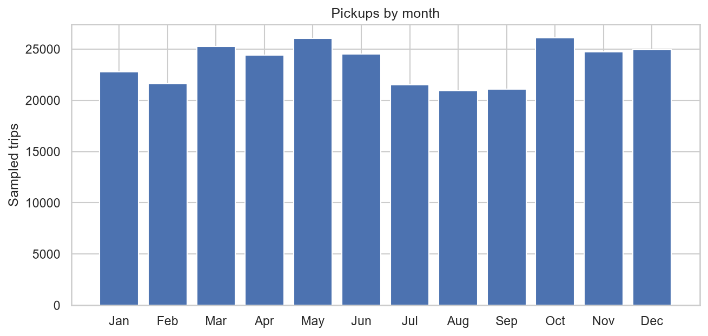
- May and October are the busiest months, with about 3.47 million trips each.
- August is the quietest, with about 2.79 million trips.
By day of the week

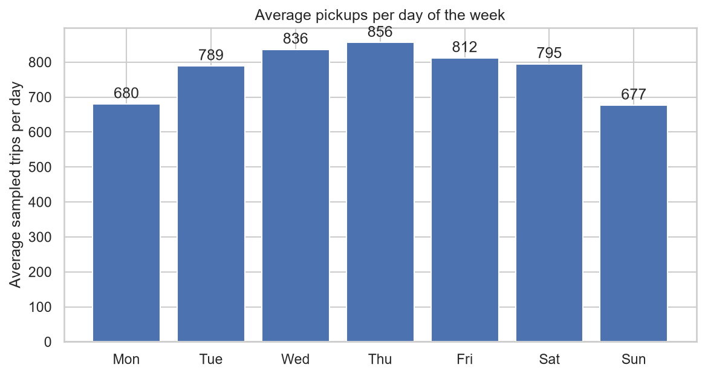
- Thursday is the busiest day, with 856 sampled trips a day on average.
- Sunday is the quietest, with 677 sampled trips a day.
03Where people ride
Pickups concentrate in Manhattan and at the airports. Most of the outer boroughs see very few yellow taxi pickups.

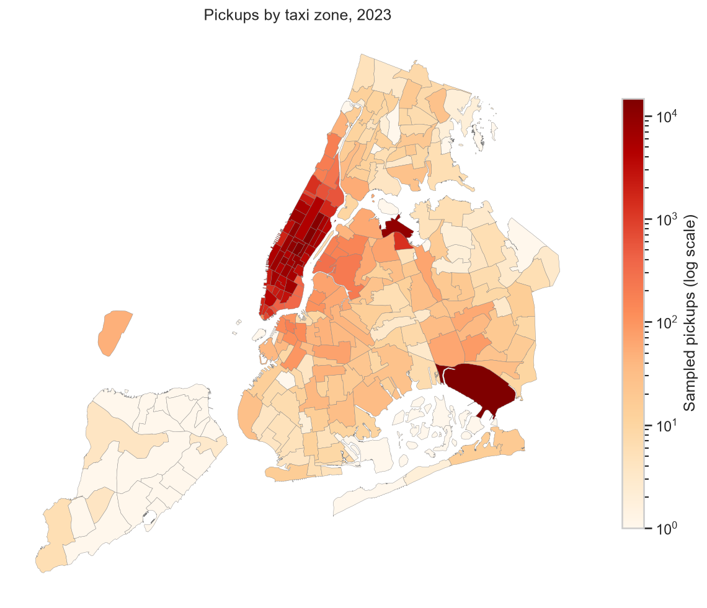
Top 10 pickup zones, share of all pickups
- JFK Airport is the single busiest pickup zone. Eight of the ten busiest zones are in Manhattan.
- Pickups elsewhere are sparse. All 20 Staten Island zones, 24 of 43 Bronx zones and 30 of 69 Queens zones had fewer than 10 sampled pickups in the year.
Where taxis arrive full and leave empty

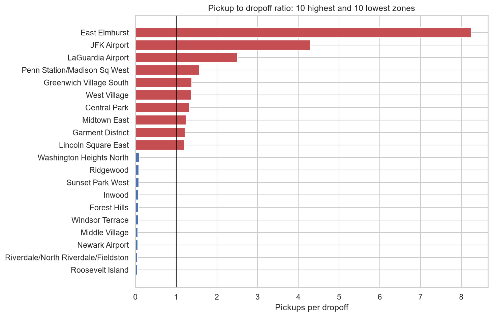
- East Elmhurst has 8.24 pickups for every dropoff. It borders LaGuardia Airport, so many of its pickups are likely airport trips.
- JFK has 4.29 and LaGuardia 2.51 pickups per dropoff. Many taxis must arrive empty to meet this demand.
- Penn Station, at 1.57, has the highest ratio in Manhattan.
- Residential zones such as Roosevelt Island, at 0.04, are net destinations. Riverdale, Middle Village and Inwood follow the same pattern. Taxis that end trips there often leave empty.
- Newark Airport, at 0.06, is mostly a dropoff point. It lies outside the city.
Busy zones through the day
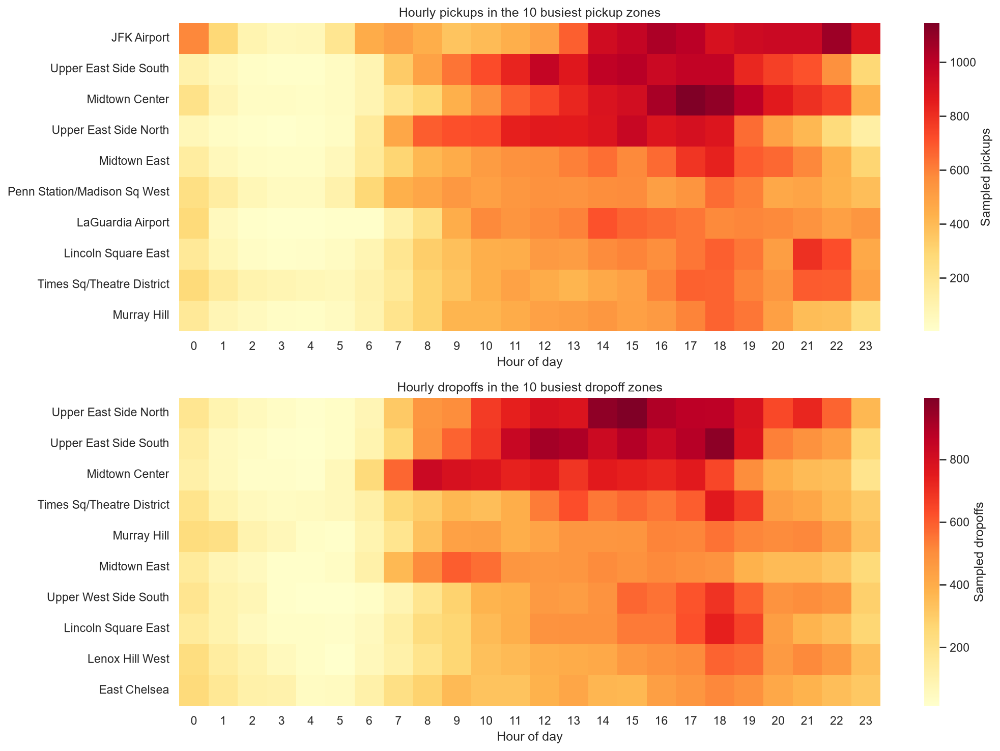
- JFK Airport is busy from 14:00 until midnight, and its pickups peak at 22:00.
- Dropoffs in Midtown Center peak from 08:00 to 10:00, as commuters arrive in the business district.
The night economy
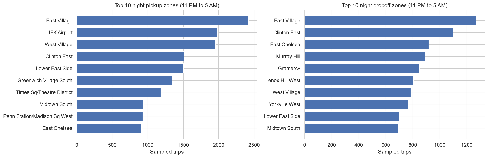
- Trips from 11 PM to 5 AM are 11.5% of trips and 11.5% of revenue. The average night total of $28.99 equals the daytime average.
- East Village, JFK Airport and the West Village lead night pickups. East Village also leads night dropoffs.
04Speed and congestion
Speed for each pickup hour is total miles divided by total hours of trips in that hour, so very short trips do not distort it.
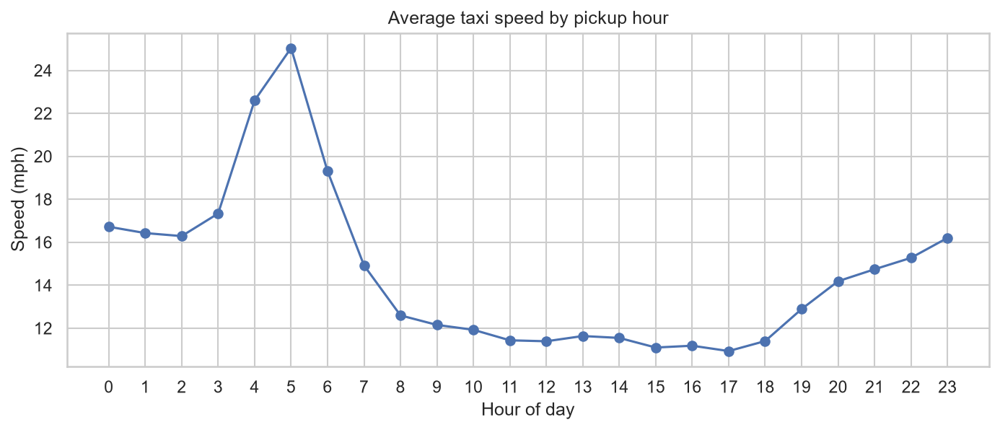
- Taxis are fastest at 05:00, at 25.0 mph, and slowest at 17:00, at 10.9 mph.
- From 08:00 to 18:00, speed stays between 10.9 and 12.6 mph. The whole working day is congested, not just the rush hours.
The slowest routes
| Route | Hour | Average speed |
|---|---|---|
| Greenwich Village South to Greenwich Village North | 13:00 | 1.7 mph |
| Midtown South to Garment District | 17:00 | 2.4 mph |
| Penn Station/Madison Sq West to Garment District | 14:00 | 2.9 mph |
| Midtown East to Times Sq/Theatre District | 13:00 | 3.0 mph |
- These are short trips of under a mile that take 10 to 25 minutes. That is about walking pace or slower.
- Route speeds use pickup zone, dropoff zone and hour combinations with at least five sampled trips.
05Fares and revenue
Revenue uses trips with a positive fare and total. Fare per mile is total fares divided by total miles in each group, so very short trips do not dominate.
Monthly revenue

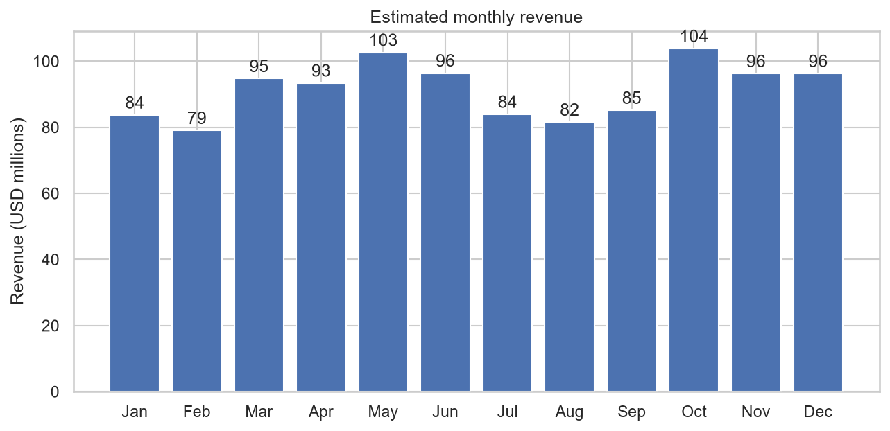
- Estimated 2023 revenue is $1.10 billion.
- Monthly revenue ranges from $79 million in February to $104 million in October.
What drives the fare
Correlation
- The meter charges for distance and time, so fare tracks both closely.
- Group size has almost no effect on the fare.
Price per mile through the week
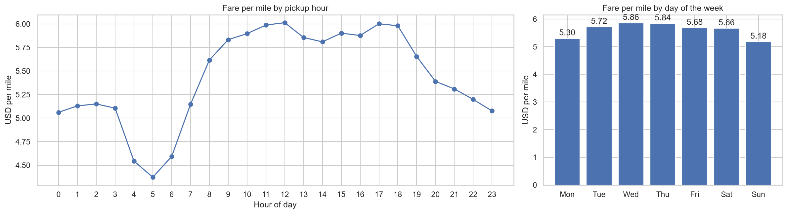
- Fare per mile is lowest at 05:00, at $4.37, and reaches about $6.00 from midday to 18:00. It mirrors the speed curve.
- Wednesday and Thursday are the most expensive days, at $5.86 and $5.84 per mile. Sunday is the cheapest, at $5.18.
Distance tiers
| Distance | Creative Mobile | VeriFone |
|---|---|---|
| Up to 2 miles | $8.69 | $8.97 |
| 2 to 5 miles | $6.28 | $6.41 |
| Over 5 miles | $4.25 | $4.30 |
- Fare per mile halves with distance, because the starting charge is spread over more miles.
- The two main vendors differ by at most $0.21 per mile in any hour.
Group size
Fare per mile per passenger
- Fare per passenger falls by 84% from one to six passengers, because the fare per mile stays between $5.37 and $5.68.
How people pay
- Almost four trips in five are paid by card. Tips are recorded only for card trips, so the tip analysis uses card trips.
- "Not recorded" is kept as its own category. Treating these trips as card payments would overstate card use and distort tips.
06Tips and passengers
Card passengers tip 22.3% of the fare on average. Short, quick trips earn the most generous tips.
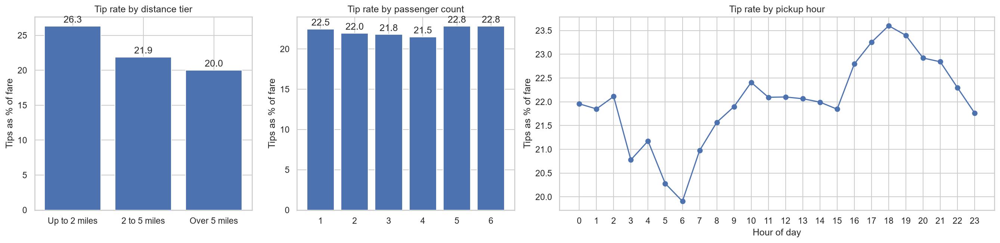
| Measure | Tip under 10% | Tip over 25% |
|---|---|---|
| Average distance | 4.84 miles | 2.31 miles |
| Average fare | $25.66 | $14.43 |
| Average duration | 21.4 minutes | 12.3 minutes |
| Airport trips | 11% | 5% |
| Average passengers | 1.37 | 1.37 |
- Trips under 2 miles get the highest tip rate, at 26.3%. Trips over 5 miles get 20.0%.
- Low tips come from longer, pricier and airport trips. Group size is the same in both groups.
- Tip rates peak from 17:00 to 19:00 and are lowest from 05:00 to 06:00.
Who rides together
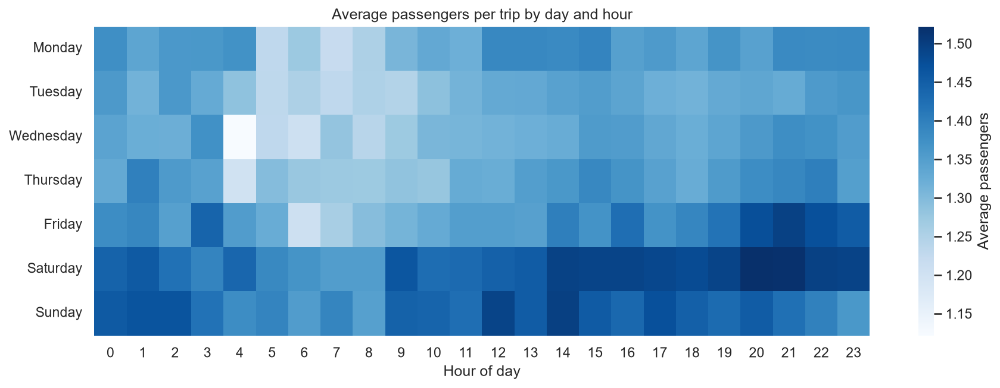
- 77.4% of trips carry one passenger, and the average is 1.38.
- Groups are largest on Friday and Saturday evenings.
Surcharges
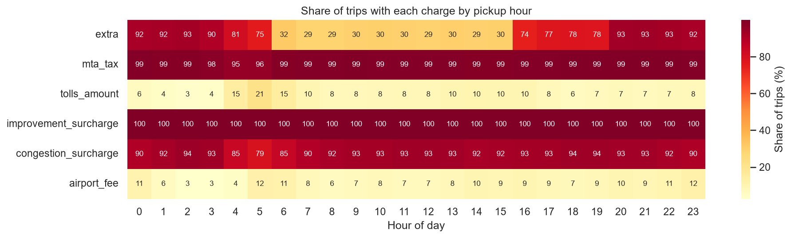
- The congestion surcharge applies to 92.3% of trips. It covers 97.6% of Manhattan pickups but only 6.7% of Bronx pickups.
- The extra charge applies mainly from 16:00 to 05:00, which matches the rush-hour and overnight surcharges.
07Recommendations
Each recommendation follows from a measured pattern above.
Dispatch
- Add supply from 15:00 to 19:00 on weekdays, when demand peaks and speeds fall to about 11 mph.
- Shift weekend supply later, towards midnight.
- Avoid short Midtown routes at midday and at 17:00, when some average under 3 mph.
Positioning
- Keep queues at JFK and LaGuardia from the afternoon until midnight.
- Place cars in the East Village, the West Village and at JFK from 11 PM to 5 AM.
- Plan return trips from residential zones where dropoffs exceed pickups by more than ten to one.
Pricing
- Target any new surcharge at the 15:00 to 19:00 peak rather than the whole day.
- Consider a group fare, because fare per passenger already falls by 84% from one to six riders.
- Review long and airport trips, which receive the lowest tip rates.
Limitations
- The analysis uses a 0.75% sample, so estimates for small zones and rare routes are uncertain.
- Cash tips are not recorded, so the tip analysis covers card trips only.
- Trip records show completed journeys only. They do not show unmet demand, waiting times or empty driving.